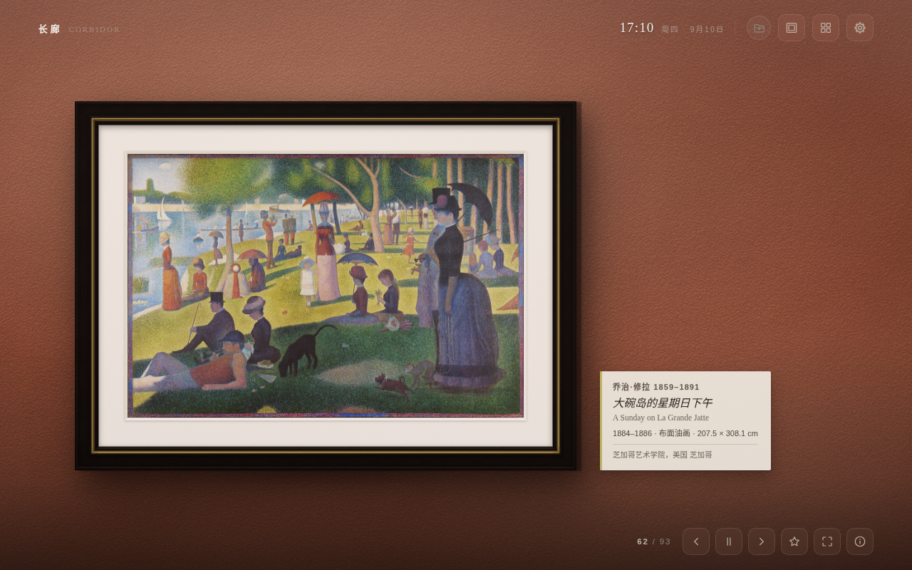
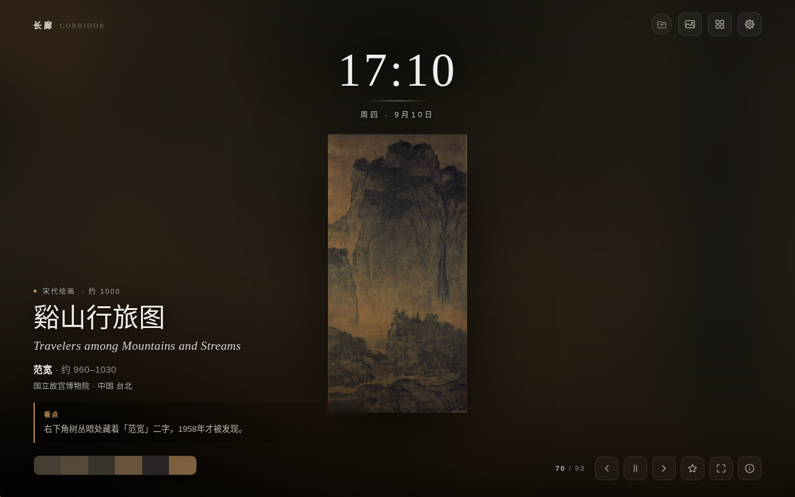
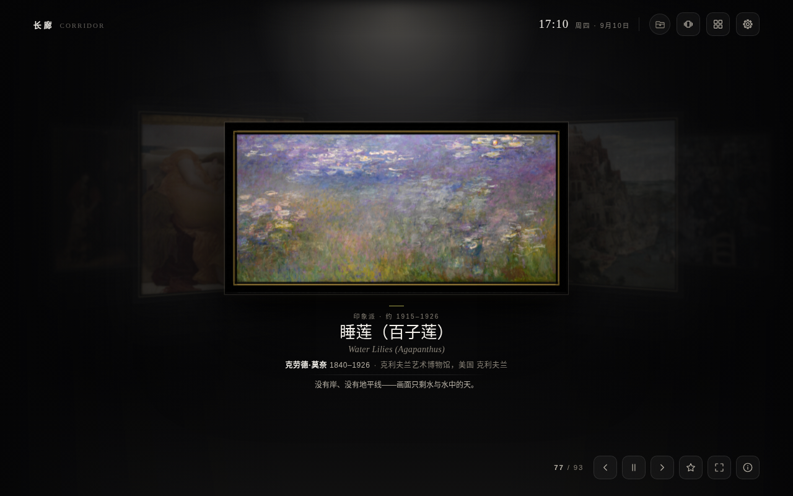
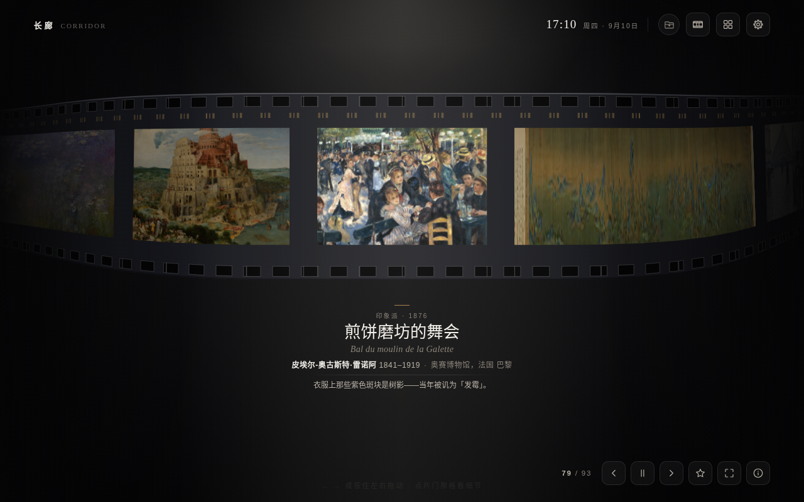
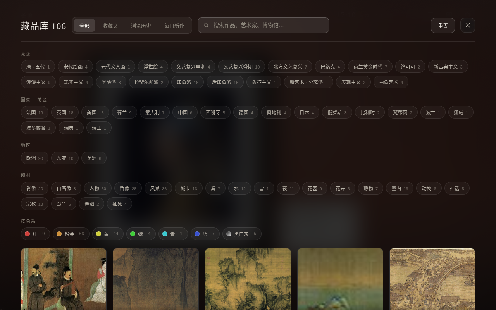
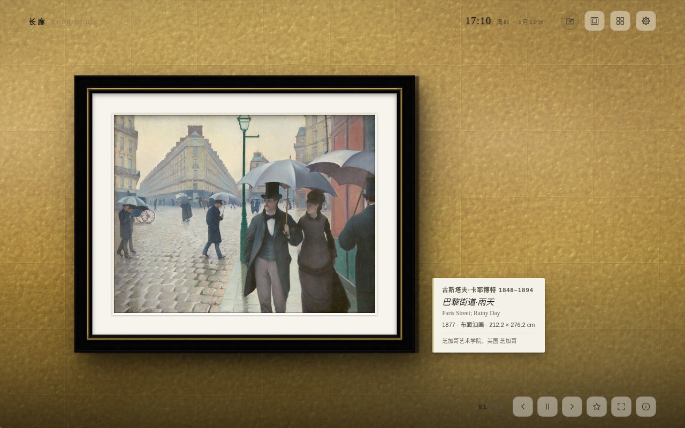
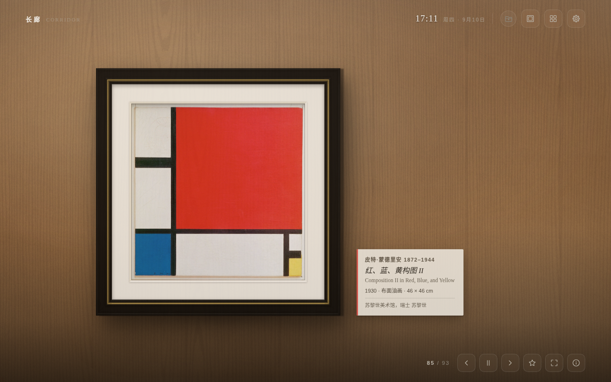
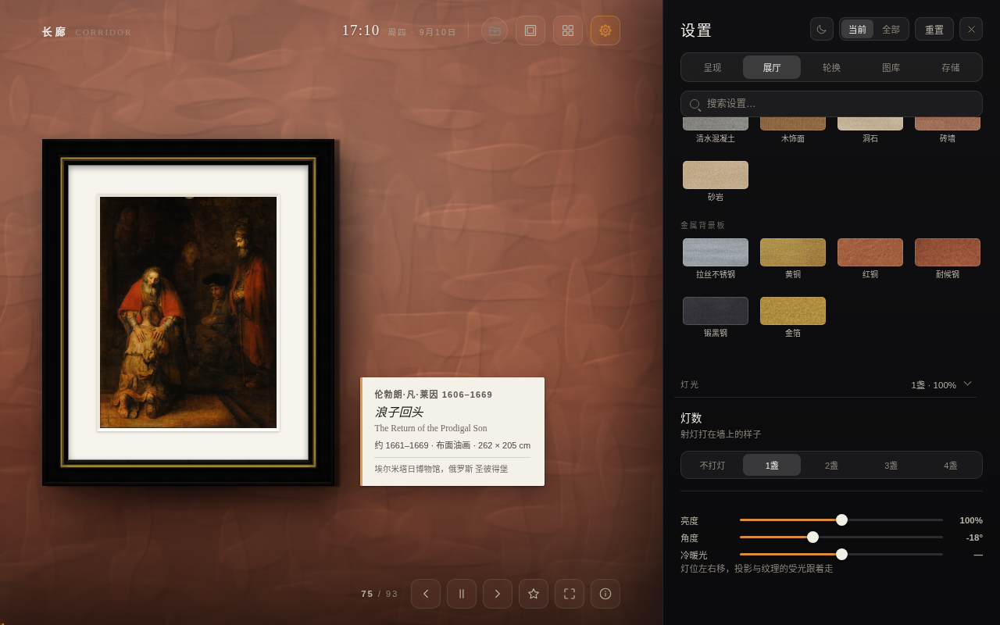
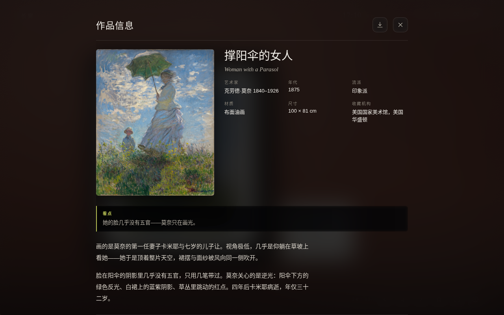

106 幅公有领域杰作106 public-domain masterpieces
长 廊Corridor
打开新标签页，看见一幅画。 Open a new tab. See a painting.
不是一张随机壁纸——是一幅挂好的画。墙有颜色和材质，画有画框和卡纸留白，顶上有射灯，画在墙上投下影子，右下角一张展签写着标题、作者、年代、收藏地。 Not a random wallpaper — a painting properly hung: a textured wall, a rendered frame, a mount, spotlights overhead, a drop shadow, and a label in the corner with the title, artist, date and collection.

美术馆展墙 · 乌木金线画框 · 卡纸留白 · 赭红墙面 Gallery wall · ebony-and-gilt frame · card mount · terracotta wall
这是什么What it is
把新标签页
换成一面美术馆的墙
A museum wall
where your new tab was
不是一张随机壁纸——是一幅挂好的画。墙有颜色和材质，画有画框和卡纸留白，顶上有射灯，画在墙上投下影子，右下角一张展签写着标题、作者、年代、收藏地，再加一句为这幅画原创撰写的导览。
106 幅作品，从《千里江山图》到《星月夜》。图片抓回来就存在本地，断网照样看。
没有服务器，没有账号，没有一行统计代码。
Not a random wallpaper — a painting that has been hung. The wall has colour and texture, the painting has a frame and a mount, spotlights sit above it, it casts a shadow, and a label in the corner carries the title, artist, date and collection, plus a curated note written for this project.
106 works, from A Thousand Li of Rivers and Mountains to The Starry Night. Images are cached the moment they arrive, so it keeps working with no connection.
No server, no account, not one line of analytics.
它能做什么What it does
每一处都能拧Every part of the wall, adjustable
五种呈现方式Five ways to hang
美术馆展墙 · 沉浸式 · 瀑布流 · 环形长廊 · 胶卷Gallery wall · immersive · masonry · carousel · filmstrip
11 种画框11 frames
照实物线脚建高度场，离线解法线做光照渲染，不是贴图Built from real moulding profiles as height fields, lit with normals solved offline — not photographs of frames
墙面Walls
15 种颜色 + 自定义色板，31 种材质分五组，饱和度与色温可再拧15 colours plus a custom swatch, 31 textures in five families, with saturation and warmth on top
射灯Spotlights
几盏、多亮、偏哪边、冷还是暖——角度一变，投影与受光跟着走How many, how bright, from which side, cool or warm — move them and the shadows move with them
随画取色Colour from the painting
每幅画的主色被读出来，画框、墙面、展签的色调跟着它走Each work's dominant colours are read out, and the frame, wall and label take their tone from them
每日新作A daily arrival
每天从 Wikimedia Commons 补几幅公有领域名作，数量自己定A few more public-domain works pulled from Wikimedia Commons each day — you set how many
挂你自己的画Hang your own
本机文件夹（可加多个）或在线图库网址，每个来源各带一套筛选Local folders (as many as you like) or an online image source, each with its own filters
接你自己的模型Bring your own model
可选、默认关闭。填一个 OpenAI / Anthropic 兼容接口，模型可看图补全作品信息，或把整套界面与导览译成 78 种语言里的任意两种Optional, off by default. Point it at any OpenAI- or Anthropic-compatible endpoint and a model can fill in missing metadata from the image, or translate the whole interface and every note into any two of 78 languages
展签翻面A label that flips
正面母语、背面外语，点一下翻过来，像一张语言闪卡Your language on the front, a foreign one on the back — one click turns it over, like a flashcard
完全离线Fully offline
图片缓存在 IndexedDB，断网可用Images live in IndexedDB — pull the plug and the wall is still there
藏品库与检索Library & search
全部 · 收藏夹 · 浏览历史，按流派、国家地区、年代筛选All works, favourites and history — filtered by movement, country and period
办公模式Office mode
12 幅含裸体的作品不参与轮换，藏品库里仍可单独点开12 works containing nudity sit out the rotation — still there in the library if you go looking
快捷键Keyboard
呈现方式The rooms
同一批画，五种挂法Same paintings, five different rooms








安装Install
两分钟，装上就能用Two minutes, no build step
Chrome 网上应用店：审核中，通过后此处会放出链接。目前用开发者模式加载，功能完全一致。 Chrome Web Store: in review — the link will appear here once it is through. Loading it unpacked meanwhile gives you exactly the same thing.
git clone https://github.com/yearnst/corridor-newtab.git- 打开 Chrome，地址栏输入
chrome://extensions/回车Open Chrome and go tochrome://extensions/ - 右上角打开开发者模式Turn on Developer mode, top right
- 点加载已解压的扩展程序Click Load unpacked
- 选仓库里的
corridor-newtab/文件夹（含manifest.json的那一层）Choose thecorridor-newtab/folder inside the repo (the one holdingmanifest.json) - 打开一个新标签页Open a new tab
Edge / Brave / Arc 等 Chromium 内核浏览器同样适用，需要 Chrome 110 及以上。没有构建步骤，没有依赖，没有 node_modules。 Edge, Brave, Arc and other Chromium browsers work too; Chrome 110 or newer. No build step, no dependencies, no node_modules.
隐私Privacy
主动发出的请求只有三类，且都可关Three kinds of request, all of them optional
- 向
upload.wikimedia.org取画作图片Fetching artwork images fromupload.wikimedia.org - 向
commons.wikimedia.org/www.wikidata.org查每日新作的元数据Looking up metadata for the daily arrivals oncommons.wikimedia.organdwww.wikidata.org - 向你自己填写的那个地址发 AI 请求或取在线图库——不填就一个请求都不发AI or image-source requests to the endpoint you typed in yourself — leave it blank and not one request is made
设置、收藏、缓存全部存在你自己这台电脑上。你填的 API 密钥只作为请求头发往你自己填的地址，别处一概不发。自定义图库里的本机图片不复制、不上传、不进缓存，只在显示那一刻读一次。 Settings, favourites and cache never leave your machine. Any API key you enter is sent as a header to the endpoint you typed in, and nowhere else. Local images from your own folders are never copied, uploaded or cached — they are read once, at the moment they are shown.
图片来源与许可Credits & licence
画是公有领域的，字是自己写的Public-domain paintings, original notes
作品图片全部来自 Wikimedia Commons 的公有领域高清扫描，每幅的来源与收藏地记录在 data/catalog.json 里。这些图片不受本仓库许可证约束。
导览文字是为这个项目原创撰写的，不是从百科抄的，与代码同样适用 MIT License。
Every image is a public-domain scan from Wikimedia Commons; the source and collection of each is recorded in data/catalog.json. Those images are not covered by this repository's licence.
The curated notes were written for this project — not lifted from an encyclopedia — and are MIT licensed along with the code.